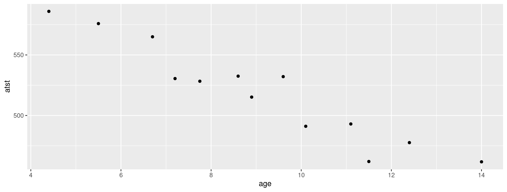
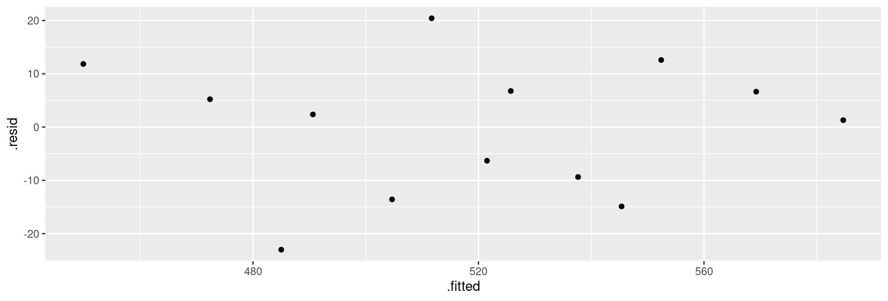
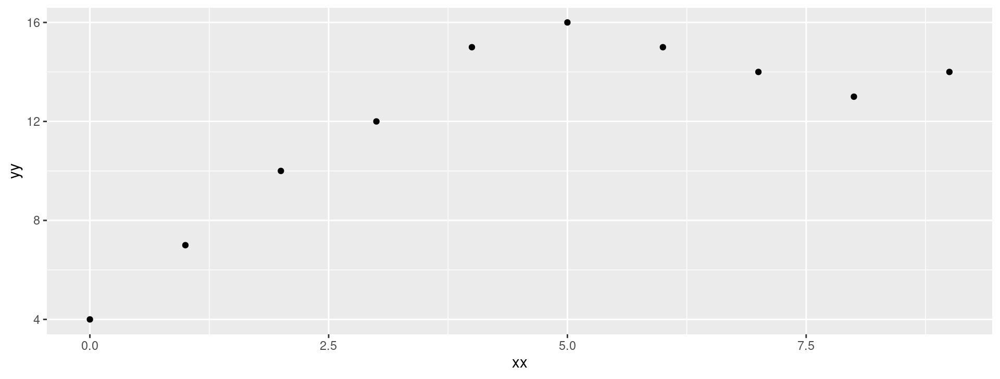
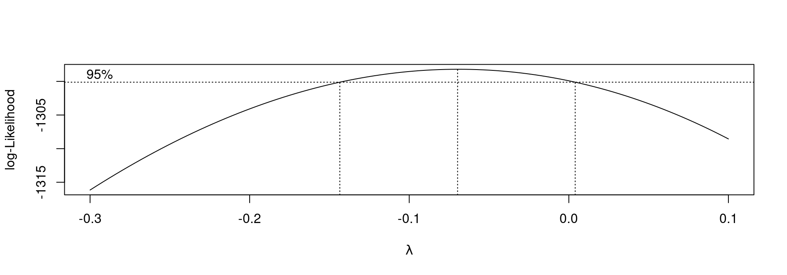
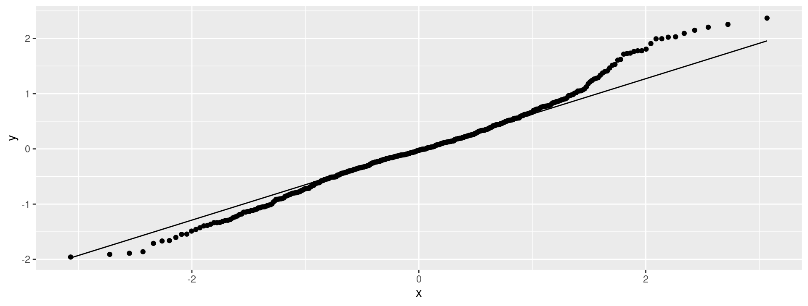
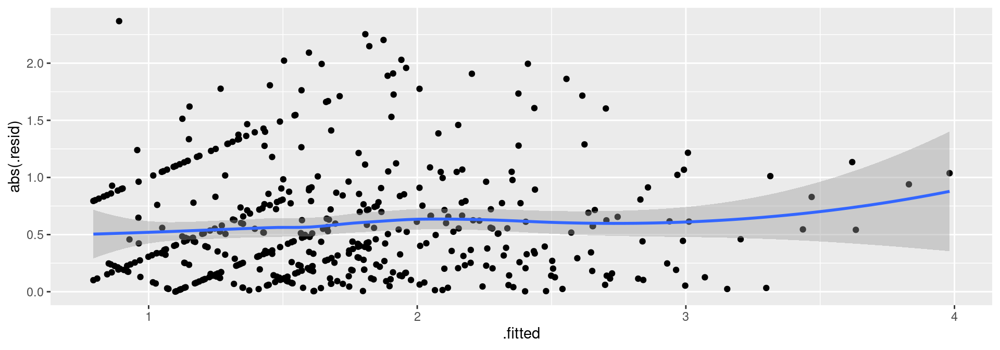
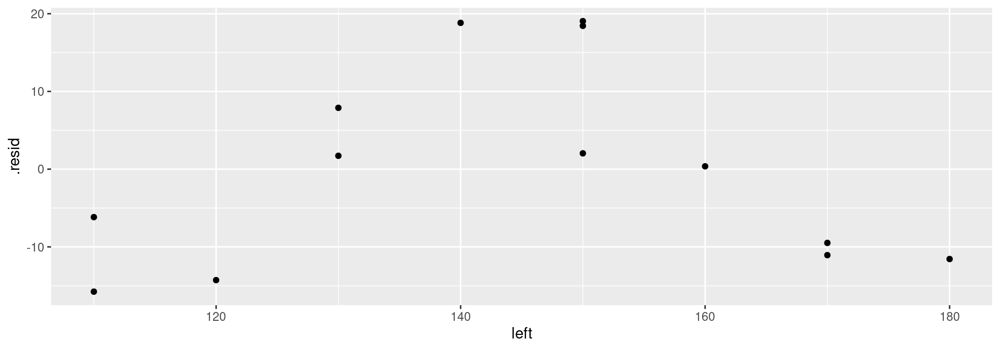

Regression revisited
Regression
Use regression when one variable is an outcome (response, \(y\)).
See if/how response depends on other variable(s), explanatory, \(x_1, x_2,\ldots\).
Can have one or more than one explanatory variable, but always one response.
Assumes a straight-line relationship between response and explanatory.
Ask:
- is there a relationship between \(y\) and \(x\)’s, and if so, which ones?
- what does the relationship look like?
Packages
A regression with one \(x\)
13 children, measure average total sleep time (ATST, mins) and age (years) for each. See if ATST depends on age. Data in sleep.txt, ATST then age. Read in data:
Check data
atst age
Min. :461.8 Min. : 4.400
1st Qu.:491.1 1st Qu.: 7.200
Median :528.3 Median : 8.900
Mean :519.3 Mean : 9.058
3rd Qu.:532.5 3rd Qu.:11.100
Max. :586.0 Max. :14.000 Make scatter plot of ATST (response) vs. age (explanatory) using code overleaf:
The scatterplot
Correlation
- Measures how well a straight line fits the data:
\(1\) is perfect upward trend, \(-1\) is perfect downward trend, 0 is no trend.
This one close to perfect downward trend.
Can do correlations of all pairs of variables:
Lowess curve
Sometimes nice to guide the eye: is the trend straight, or not?
Idea: lowess curve. “Locally weighted least squares”, not affected by outliers, not constrained to be linear.
Lowess is a guide: even if straight line appropriate, may wiggle/bend a little. Looking for serious problems with linearity.
Add lowess curve to plot using
geom_smooth:
Plot with lowess curve

The regression
Scatterplot shows no obvious curve, and a pretty clear downward trend. So we can run the regression:
The output
Call:
lm(formula = atst ~ age, data = sleep)
Residuals:
Min 1Q Median 3Q Max
-23.011 -9.365 2.372 6.770 20.411
Coefficients:
Estimate Std. Error t value Pr(>|t|)
(Intercept) 646.483 12.918 50.05 2.49e-14 ***
age -14.041 1.368 -10.26 5.70e-07 ***
---
Signif. codes:
0 '***' 0.001 '**' 0.01 '*' 0.05 '.' 0.1 ' ' 1
Residual standard error: 13.15 on 11 degrees of freedom
Multiple R-squared: 0.9054, Adjusted R-squared: 0.8968
F-statistic: 105.3 on 1 and 11 DF, p-value: 5.7e-07Conclusions
The relationship appears to be a straight line, with a downward trend.
\(F\)-tests for model as a whole and \(t\)-test for slope (same) both confirm this (P-value \(5.7\times 10^{-7}=0.00000057\)).
Slope is \(-14\), so a 1-year increase in age goes with a 14-minute decrease in ATST on average.
R-squared is correlation squared (when one \(x\) anyway), between 0 and 1 (1 good, 0 bad).
Here R-squared is 0.9054, pleasantly high.
Doing things with the regression output
Output from regression (and eg. \(t\)-test) is all right to look at, but hard to extract and re-use information from.
Package
broomextracts info from model output in way that can be used in pipe (later):
also one-line summary of model:
Broom part 2
Useful for plotting residuals against an \(x\)-variable.
CI for mean response and prediction intervals
Once useful regression exists, use it for prediction:
To get a single number for prediction at a given \(x\), substitute into regression equation, eg. age 10: predicted ATST is \(646.48-14.04(10)=506\) minutes.
To express uncertainty of this prediction:
CI for mean response expresses uncertainty about mean ATST for all children aged 10, based on data.
Prediction interval expresses uncertainty about predicted ATST for a new child aged 10 whose ATST not known. More uncertain.
Also do above for a child aged 5.
The marginaleffects package 1/2
To get predictions for specific values, set up a dataframe with those values first:
Any variables in the dataframe that you don’t specify are set to their mean values (quantitative) or most common category (categorical).
The marginaleffects package 2/2
Then feed into newdata in predictions. This contains a lot of columns, so you probably want only to display the ones you care about:
The confidence limits are a 95% confidence interval for the mean response at that age.
Prediction intervals
These are obtained (instead) with predict as below. Use the same dataframe new as before:
That grey envelope
Marks confidence interval for mean for all \(x\):

Diagnostics
How to tell whether a straight-line regression is appropriate?
Before: check scatterplot for straight trend.
After: plot residuals (observed minus predicted response) against predicted values. Aim: a plot with no pattern.
Residual plot
Not much pattern here — regression appropriate.
An inappropriate regression
Different data:
Scatterplot
Regression line, anyway
Call:
lm(formula = yy ~ xx, data = curvy)
Residuals:
Min 1Q Median 3Q Max
-3.582 -2.204 0.000 1.514 3.509
Coefficients:
Estimate Std. Error t value Pr(>|t|)
(Intercept) 7.5818 1.5616 4.855 0.00126 **
xx 0.9818 0.2925 3.356 0.00998 **
---
Signif. codes:
0 '***' 0.001 '**' 0.01 '*' 0.05 '.' 0.1 ' ' 1
Residual standard error: 2.657 on 8 degrees of freedom
Multiple R-squared: 0.5848, Adjusted R-squared: 0.5329
F-statistic: 11.27 on 1 and 8 DF, p-value: 0.009984Residual plot

No good: fixing it up
Residual plot has curve: middle residuals positive, high and low ones negative. Bad.
Fitting a curve would be better. Try this:
Adding
xx-squared term, to allow for curve.Another way to do same thing: specify how model changes:
Regression 2
Comments
xx-squared term definitely significant (P-value 0.000182), so need this curve to describe relationship.Adding squared term has made R-squared go up from 0.5848 to 0.9502: great improvement.
This is a definite curve!
The residual plot now
No problems any more:

Another way to handle curves
Above, saw that changing \(x\) (adding \(x^2\)) was a way of handling curved relationships.
Another way: change \(y\) (transformation).
Can guess how to change \(y\), or might be theory:
example: relationship \(y=ae^{bx}\) (exponential growth):
take logs to get \(\ln y=\ln a + bx\).
Taking logs has made relationship linear (\(\ln y\) as response).
Or, estimate transformation, using Box-Cox method.
Box-Cox
Install package
MASSviainstall.packages("MASS")(only need to do once)Every R session you want to use something in
MASS, typelibrary(MASS)
Some made-up data
Seems to be faster-than-linear growth, maybe exponential growth.
Scatterplot: faster than linear growth

Running Box-Cox
library(MASS)first.Feed
boxcoxa model formula with a squiggle in it, such as you would use forlm.Output: a graph (next page):
The Box-Cox output

Comments
\(\lambda\) (lambda) is the power by which you should transform \(y\) to get the relationship straight (straighter). Power 0 is “take logs”
Middle dotted line marks best single value of \(\lambda\) (here about 0.1).
Outer dotted lines mark 95% CI for \(\lambda\), here \(-0.3\) to 0.7, approx. (Rather uncertain about best transformation.)
Any power transformation within the CI supported by data. In this case, log (\(\lambda=0\)) and square root (\(\lambda=0.5\)) good, but no transformation (\(\lambda=1\)) not.
Pick a “round-number” value of \(\lambda\) like \(2,1,0.5,0,-0.5,-1\). Here 0 and 0.5 good values to pick.
Did transformation straighten things?
- Plot transformed \(y\) against \(x\). Here, log:

Looks much straighter.
Regression with transformed \(y\)
R-squared now decently high.
Multiple regression
What if more than one \(x\)? Extra issues:
Now one intercept and a slope for each \(x\): how to interpret?
Which \(x\)-variables actually help to predict \(y\)?
Different interpretations of “global” \(F\)-test and individual \(t\)-tests.
R-squared no longer correlation squared, but still interpreted as “higher better”.
In
lmline, add extra \(x\)s after~.Interpretation not so easy (and other problems that can occur).
Multiple regression example
Study of women and visits to health professionals, and how the number of visits might be related to other variables:
timedrs response, others explanatory.
The data
Check data
Fit multiple regression
Call:
lm(formula = timedrs ~ phyheal + menheal + stress, data = visits)
Residuals:
Min 1Q Median 3Q Max
-14.792 -4.353 -1.815 0.902 65.886
Coefficients:
Estimate Std. Error t value Pr(>|t|)
(Intercept) -3.704848 1.124195 -3.296 0.001058 **
phyheal 1.786948 0.221074 8.083 5.6e-15 ***
menheal -0.009666 0.129029 -0.075 0.940318
stress 0.013615 0.003612 3.769 0.000185 ***
---
Signif. codes:
0 '***' 0.001 '**' 0.01 '*' 0.05 '.' 0.1 ' ' 1
Residual standard error: 9.708 on 461 degrees of freedom
Multiple R-squared: 0.2188, Adjusted R-squared: 0.2137
F-statistic: 43.03 on 3 and 461 DF, p-value: < 2.2e-16The slopes
Model as a whole strongly significant even though R-sq not very big (lots of data). At least one of the \(x\)’s predicts
timedrs.The physical health and stress variables definitely help to predict the number of visits, but with those in the model we don’t need
menheal. However, look at prediction oftimedrsfrommenhealby itself:
Just menheal
Call:
lm(formula = timedrs ~ menheal, data = visits)
Residuals:
Min 1Q Median 3Q Max
-13.826 -5.150 -2.818 1.177 72.513
Coefficients:
Estimate Std. Error t value Pr(>|t|)
(Intercept) 3.8159 0.8702 4.385 1.44e-05 ***
menheal 0.6672 0.1173 5.688 2.28e-08 ***
---
Signif. codes:
0 '***' 0.001 '**' 0.01 '*' 0.05 '.' 0.1 ' ' 1
Residual standard error: 10.6 on 463 degrees of freedom
Multiple R-squared: 0.06532, Adjusted R-squared: 0.0633
F-statistic: 32.35 on 1 and 463 DF, p-value: 2.279e-08menheal by itself
menhealby itself does significantly help to predicttimedrs.But the R-sq is much less (6.5% vs. 22%).
So other two variables do a better job of prediction.
With those variables in the regression (
phyhealandstress), don’t needmenhealas well.
Investigating via correlation
Leave out first column (subjno):
timedrs phyheal menheal stress
timedrs 1.0000000 0.4395293 0.2555703 0.2865951
phyheal 0.4395293 1.0000000 0.5049464 0.3055517
menheal 0.2555703 0.5049464 1.0000000 0.3697911
stress 0.2865951 0.3055517 0.3697911 1.0000000phyhealmost strongly correlated withtimedrs.Not much to choose between other two.
But
menhealhas higher correlation withphyheal, so not as much to add to prediction asstress.Goes to show things more complicated in multiple regression.
Residual plot (from timedrs on all)

Apparently random. But…
Normal quantile plot of residuals

Not normal at all; upper tail is way too long.
Absolute residuals
Is there trend in size of residuals (fan-out)? Plot absolute value of residual against fitted value:

Comments
On the normal quantile plot:
highest (most positive) residuals are way too high
distribution of residuals skewed to right (not normal at all)
On plot of absolute residuals:
size of residuals getting bigger as fitted values increase
predictions getting more variable as fitted values increase
that is, predictions getting less accurate as fitted values increase, but predictions should be equally accurate all way along.
Both indicate problems with regression, of kind that transformation of response often fixes: that is, predict function of response
timedrsinstead oftimedrsitself.
Box-Cox transformations
Taking log of
timedrsand having it work: lucky guess. How to find good transformation?Box-Cox again.
Extra problem: some of
timedrsvalues are 0, but Box-Cox expects all +. Note response forboxcox:
Try 1

Comments on try 1
Best: \(\lambda\) just less than zero.
Hard to see scale.
Focus on \(\lambda\) in \((-0.3,0.1)\):
[1] -0.30 -0.29 -0.28 -0.27 -0.26 -0.25 -0.24 -0.23 -0.22
[10] -0.21 -0.20 -0.19 -0.18 -0.17 -0.16 -0.15 -0.14 -0.13
[19] -0.12 -0.11 -0.10 -0.09 -0.08 -0.07 -0.06 -0.05 -0.04
[28] -0.03 -0.02 -0.01 0.00 0.01 0.02 0.03 0.04 0.05
[37] 0.06 0.07 0.08 0.09 0.10Try 2
Comments
Best: \(\lambda\) just about \(-0.07\).
CI for \(\lambda\) about \((-0.14,0.01)\).
Only nearby round number: \(\lambda=0\), log transformation.
Fixing the problems
Try regression again, with transformed response instead of original one.
Then check residual plot to see that it is OK now.
timedrs+1because sometimedrsvalues 0, can’t take log of 0.Won’t usually need to worry about this, but when response could be zero/negative, fix that before transformation.
Output
Call:
lm(formula = log(timedrs + 1) ~ phyheal + menheal + stress, data = visits)
Residuals:
Min 1Q Median 3Q Max
-1.95865 -0.44076 -0.02331 0.42304 2.36797
Coefficients:
Estimate Std. Error t value Pr(>|t|)
(Intercept) 0.3903862 0.0882908 4.422 1.22e-05 ***
phyheal 0.2019361 0.0173624 11.631 < 2e-16 ***
menheal 0.0071442 0.0101335 0.705 0.481
stress 0.0013158 0.0002837 4.638 4.58e-06 ***
---
Signif. codes:
0 '***' 0.001 '**' 0.01 '*' 0.05 '.' 0.1 ' ' 1
Residual standard error: 0.7625 on 461 degrees of freedom
Multiple R-squared: 0.3682, Adjusted R-squared: 0.3641
F-statistic: 89.56 on 3 and 461 DF, p-value: < 2.2e-16Comments
Model as a whole strongly significant again
R-sq higher than before (37% vs. 22%) suggesting things more linear now
Same conclusion re
menheal: can take out of regression.Should look at residual plots (next pages). Have we fixed problems?
Residuals against fitted values

Normal quantile plot of residuals
Absolute residuals against fitted
Comments
Residuals vs. fitted looks a lot more random.
Normal quantile plot looks a lot more normal (though still a little right-skewness)
Absolute residuals: not so much trend (though still some).
Not perfect, but much improved.
Testing more than one \(x\) at once
- The \(t\)-tests test only whether one variable could be taken out of the regression you’re looking at.
- To test significance of more than one variable at once, fit model with and without variables
- then use
anovato compare fit of models:
- then use
Results of tests
Models don’t fit equally well, so bigger one fits better.
Or “taking both variables out makes the fit worse, so don’t do it”.
Taking out those \(x\)’s is a mistake. Or putting them in is a good idea.
The punting data
Data set punting.txt contains 4 variables for 13 right-footed football kickers (punters): left leg and right leg strength (lbs), distance punted (ft), another variable called “fred”. Predict punting distance from other variables:
left right punt fred
170 170 162.50 171
130 140 144.0 136
170 180 174.50 174
160 160 163.50 161
150 170 192.0 159
150 150 171.75 151
180 170 162.0 174
110 110 104.83 111
110 120 105.67 114
120 130 117.58 126
140 120 140.25 129
130 140 150.17 136
150 160 165.17 154
Reading in
- Separated by multiple spaces with columns lined up:
The data
Regression and output
Comments
Overall regression strongly significant, R-sq high.
None of the \(x\)’s significant! Why?
\(t\)-tests only say that you could take any one of the \(x\)’s out without damaging the fit; doesn’t matter which one.
Explanation: look at correlations.
The correlations
left right punt fred
left 1.0000000 0.8957224 0.8117368 0.9722632
right 0.8957224 1.0000000 0.8805469 0.9728784
punt 0.8117368 0.8805469 1.0000000 0.8679507
fred 0.9722632 0.9728784 0.8679507 1.0000000All correlations are high: \(x\)’s with
punt(good) and with each other (bad, at least confusing).What to do? Probably do just as well to pick one variable, say
rightsince kickers are right-footed.
Just right
No significant loss by dropping other two variables.
Comparing R-squareds
Basically no difference. In regression (over), right significant:
Regression results
But
Maybe we got the form of the relationship with
leftwrong.Check: plot residuals from previous regression (without
left) againstleft.Residuals here are “punting distance adjusted for right leg strength”.
If there is some kind of relationship with
left, we should include in model.Plot of residuals against original variable:
augmentfrombroom.
Augmenting punting.2
Residuals against left
Comments
There is a curved relationship with
left.We should add
left-squared to the regression (and therefore putleftback in when we do that):
Regression with left-squared
Call:
lm(formula = punt ~ left + I(left^2) + right, data = punting)
Residuals:
Min 1Q Median 3Q Max
-11.3777 -5.3599 0.0459 4.5088 13.2669
Coefficients:
Estimate Std. Error t value Pr(>|t|)
(Intercept) -4.623e+02 9.902e+01 -4.669 0.00117 **
left 6.888e+00 1.462e+00 4.710 0.00110 **
I(left^2) -2.302e-02 4.927e-03 -4.672 0.00117 **
right 7.396e-01 2.292e-01 3.227 0.01038 *
---
Signif. codes:
0 '***' 0.001 '**' 0.01 '*' 0.05 '.' 0.1 ' ' 1
Residual standard error: 7.931 on 9 degrees of freedom
Multiple R-squared: 0.9352, Adjusted R-squared: 0.9136
F-statistic: 43.3 on 3 and 9 DF, p-value: 1.13e-05Comments
This was definitely a good idea (R-squared has clearly increased).
We would never have seen it without plotting residuals from
punting.2(withoutleft) againstleft.Negative slope for
leftsqmeans that increased left-leg strength only increases punting distance up to a point: beyond that, it decreases again.
Comments
Age 10 closer to centre of data, so intervals are both narrower than those for age 5.
Prediction intervals bigger than CI for mean (additional uncertainty).
Technical note: output from
predictis Rmatrix, not data frame, so Tidyversebind_colsdoes not work. Use base Rcbind.